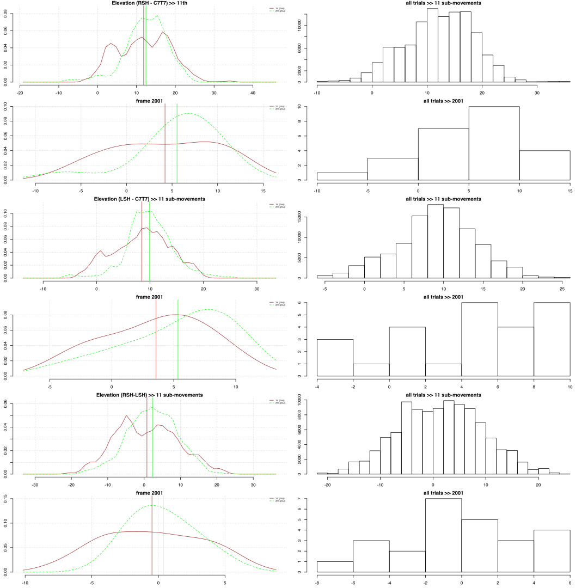
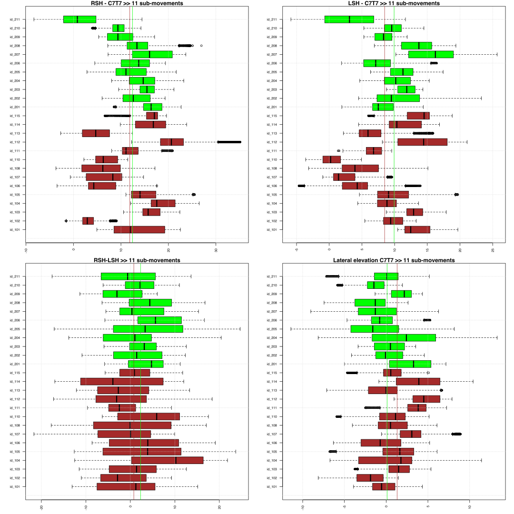
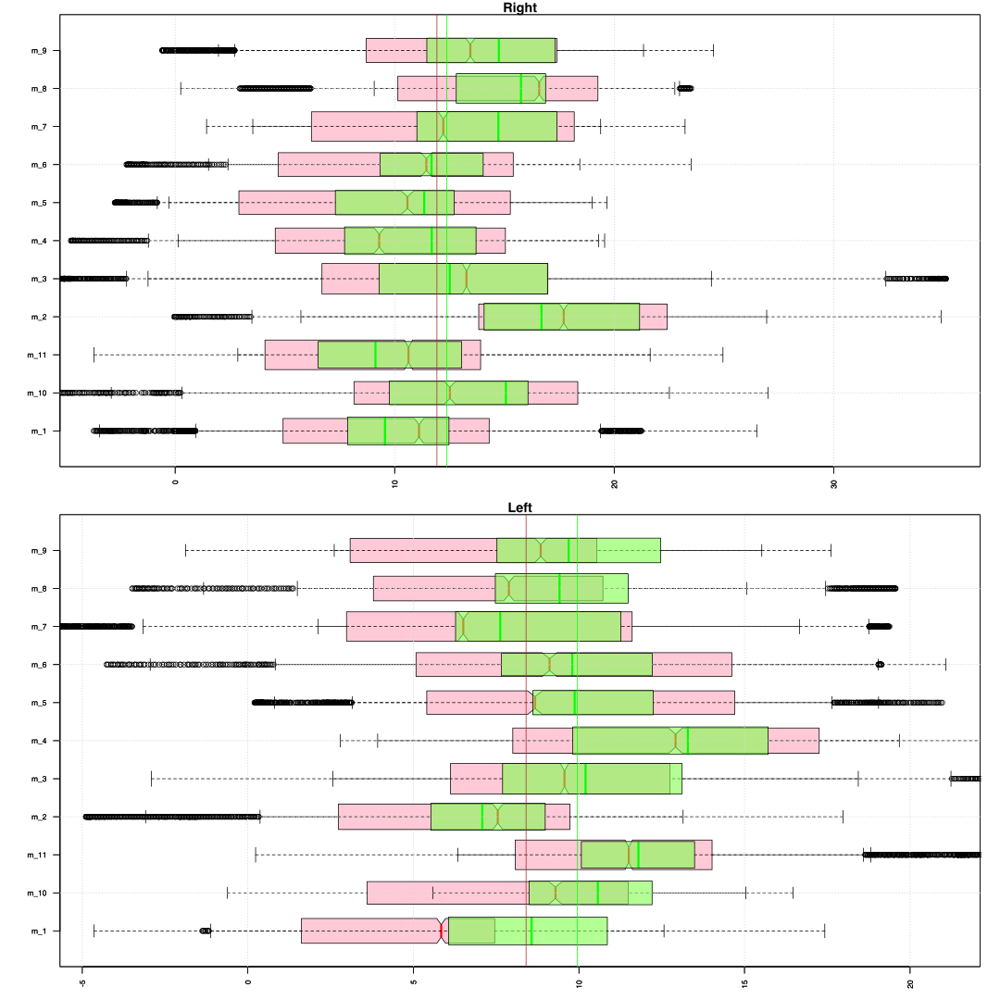
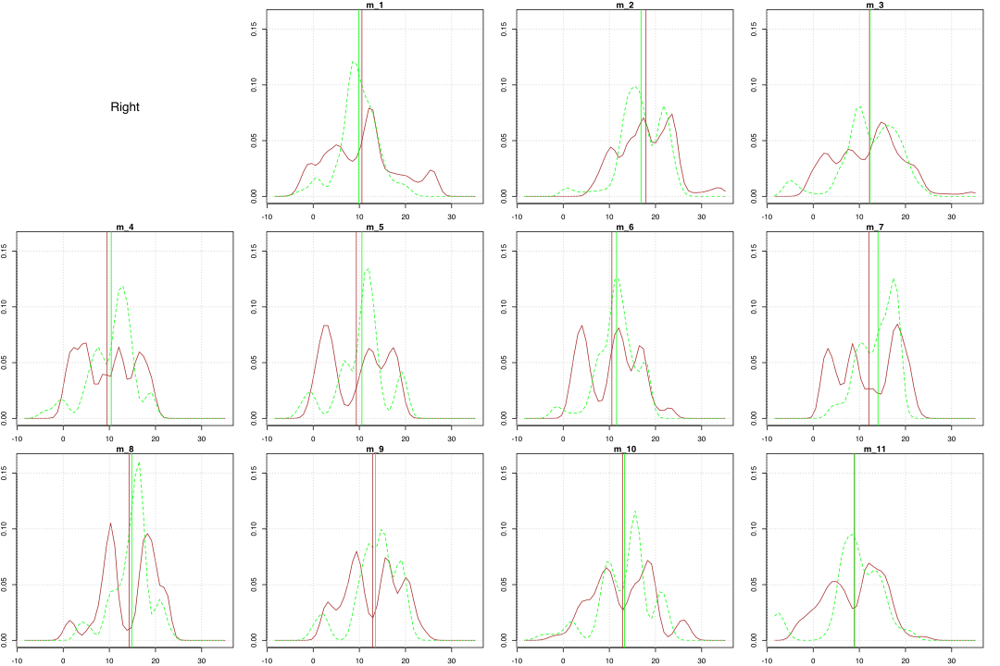
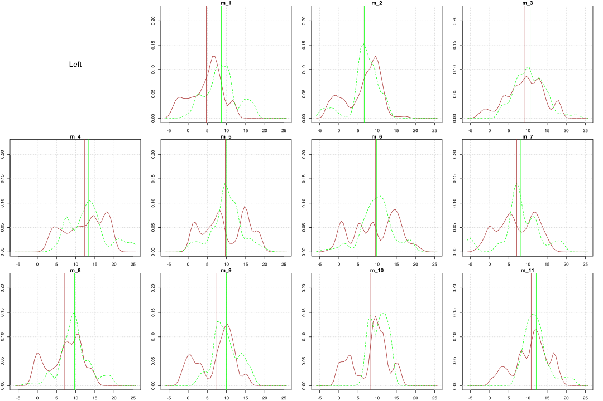
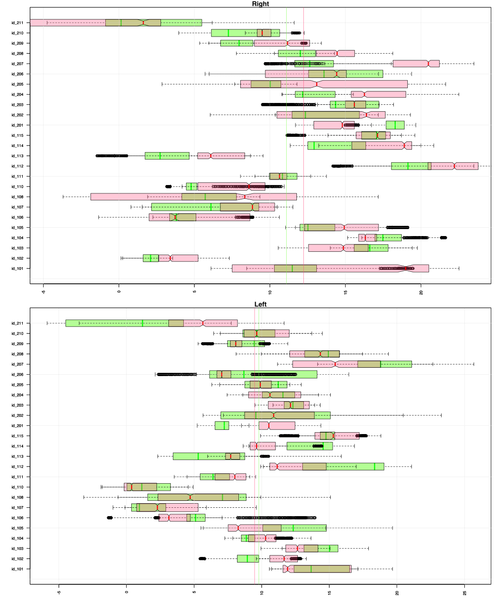
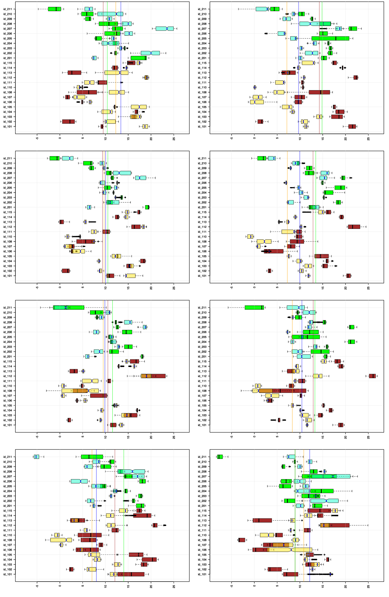

How the clavicles move relatively to the ribcage in the vertical direction?
We need to look at shoulders representations that are given by two lines that connect marker (STRN) at top area of a breast bone (sternum) and bony parts of left and right shoulder joints (RSH and LSH markers placed at parts of the scapula that forms the highest points of the shoulders). These two lines (for right and left) reflect motion of the shoulders and in a 1st place of clavicles. Thus we can estimate amount of elevation/depression in the shoulder motion by looking at elevation angles between the ribcage and these lines.
For the ribcage representation we take the spinal plane that represents the upper part of the ribcage (5th). This plane models a part between C7 to T7 vertebras, is perpendicular to the C7T7 line with the forward orientation that is defined by the STRN marker. Thus the elevation angles are given by the 'su' points that define a lateral tilt of the ribcage (su5_2). As the 'su' points are defined on the left side of the body (positive Y-axis) we need to calculate left and right angles differently to get an estimate of how left and right shoulders are moving up and down relatively to the ribcage. For the left side we use (LSH_2 - su5_2) and the right side (RSH_2 + su5_2).
Summary. Motion of the clavicles relative to the vertical orientation of the ribcage
The difference in elevation angles (RSH_2-su5_2 and LSH_2-su5_2) are measured relatively to the lateral elevation angle of the 5th spinal plane. So for example positive value for the clavicle indicates that clavicle line and the ribcage build an upwards angle whereas negative value is indicating the downwards angle; in other words the former corresponds to the upwards motion of the shoulder (elevation) and the latter an downwards motion (depression). It is important to note that anatomically every person will have different values for these angles in the neutral position that we can estimate by looking at the values in the standing position at the beginning of the trial (2001-code). The symmetry of the shoulders is estimated in absolute coordinate frame by subtracting elevation angle of the right clavicle line from the left clavicle (RSH_2 - LSH_2). The positive value would correspond to the higher right shoulder and negative to the higher left without considering the orientation of the ribcage.
For the elevation angles in the 11 sub-movements we can see that 1st group has a slightly smaller mean value (around 1.5 degrees) than the 2nd for the both clavicles. In the beginning of trials (2001-code) than person is standing, both groups seem to have smaller angles (about 7.6/6.9 degrees for right and 4.9/4.6 for the left) or in other words on average shoulder were less elevated in the static posture comparing to the summarised motion intervals. The means of differences between right and left sides are has small values (0.8 for the 1st group and 2.3 degrees for the 2nd); e.g. right shoulder seems to be slightly more up in the 2nd group.
Elevation (RSH - C7T7) >> 2nd step SF, 11 sub-movements
| mean | sd | sem | n | NAs | max | min | |
|---|---|---|---|---|---|---|---|
| 1st group | 11.86 | 6.864 | 0.0284 | 58527 | 0 | 35.11 | -3.694 |
| 2nd group | 12.46 | 5.532 | 0.0261 | 44872 | 0 | 26.95 | -8.336 |
| 2001-1st | 4.223 | 5.788 | 1.547 | 14 | 0 | 11.79 | -4.583 |
| 2001-2nd | 5.542 | 4.59 | 1.384 | 11 | 0 | 10.28 | -6.733 |
Elevation (LSH - C7T7) >> 2nd step SF, 11 sub-movements
| mean | sd | sem | n | NAs | max | min | |
|---|---|---|---|---|---|---|---|
| 1st group | 8.473 | 5.284 | 0.0218 | 58527 | 0 | 21.08 | -4.644 |
| 2nd group | 9.922 | 4.487 | 0.0212 | 44872 | 0 | 25.69 | -5.867 |
| 2001-1st | 3.563 | 4.099 | 1.095 | 14 | 0 | 9.314 | -3.315 |
| 2001-2nd | 5.344 | 4.395 | 1.325 | 11 | 0 | 9.851 | -3.745 |
Elevation (RSH - LSH) >> 2nd step SF, 11 sub-movements
| mean | sd | sem | n | NAs | max | min | |
|---|---|---|---|---|---|---|---|
| 1st group | 0.7729 | 8.533 | 0.0353 | 58527 | 0 | 23.69 | -21.69 |
| 2nd group | 2.307 | 6.836 | 0.0323 | 44872 | 0 | 24.69 | -17.6 |
| 2001-1st | -0.4815 | 3.801 | 1.016 | 14 | 0 | 5.67 | -6.991 |
| 2001-2nd | 0.3531 | 2.27 | 0.6843 | 11 | 0 | 4.679 | -2.604 |

Than data of the 4th to 11th sub-movements is grouped by trial identities the 2nd group seems to have trials whose value ranges deviate less from each other than the 1st group (e.g. green boxplots are less spread out comparing to brown). So in the density plots we can notice that trials in the 2nd group have their peaks for the left and right sides close to each other (except ‘id_201’ and ‘id_206’) whereas in the1st group more trials seem to have differences in the their vertical movement in the left and right shoulders.
Than data is grouped by 11 sub-movements we can notice that the 1st group has wider range values for both sides and across different sub-movements; e.g. green boxplots are positioned slightly more rightwards towards the higher angles comparing to the red boxplots and are less wide. Also density plots for the left clavicle in 2nd interval (3rd row) seems to differ more from the density plots of the right clavicle in the 1st interval (2nd row) in the 1st group than in the 2nd group. As these 2 intervals capture symmetrical movement the right shoulder in the 1st interval should match the left in the 2nd and vice versa. It seems that the vertical shoulder motion of the more moving arm (right in the 1st interval and left in the 2nd interval) is more uniform in the 2nd group than in the 1st. However the vertical shoulder motion of the less moving arm seems to be more similar among the 1st group than the 2nd; e.g. green density plots for the right shoulder in the 3rd row are less similar with the green density plots for the left shoulder in the 2nd row than corresponding brown density plots.
Than data is grouped by two intervals we can see that in a contrast to the protraction and retraction motion in 2 intervals that showed more movement for one shoulder, the vertical motion of the shoulders is more or less equal in the intervals. Also as expected we can notice that most of the values are positive because mean of ‘normal’ angles in a resting position are around 4-5 degrees higher than the ribcage plane. Thus values smaller than -5 degrees for the less moving arm in ‘id_211’ seem to be rather extreme.
In the time series the light green lines should be close with the dark red lines as a movement of the right arm in the 1st interval (light green) is the same as a movement of the left arm in the 2nd interval (red); and reversely, the orange lines should match the dark green lines. However we can see that it is rarely the case; in some trials there is an offset in values (e.g. left shoulder in ‘id_206’, ‘id_114’ orange and dark green) or shape of the curves is different (e.g. right shoulder in ‘id_204’, light green and red). Also it is noticeable that some trials have a left or right bias, e.g. ‘id_101’ or ‘id_207’ have in standing position the right shoulder higher than the left (marked by horizontal light green and orange lines).
Furthermore if we look at time series of the difference angle between right and left shoulder in absolute the lab system frame and at the lateral elevation angles of the ribcage we would expect that they would be negatively correlated because if the ribcage is tilted to the right (positive angles) the right shoulder will be lower than the left. A shoulder can move up and downwards independently of the orientation of the ribcage but it is less common to elevate the shoulder than tilting towards its lateral side. As expected we can see in the 2nd panel with time series this negative correlation; e.g. the olive green and light grey lines for the 1st interval and dark pink and grey for the 2nd interval (very clear example is ‘id_205’ and some exception in the 2nd interval for ‘id_211’). However amplitude of the shoulder movement seems to be higher than of the ribcage for most of the cases and if we sum negatively correlated time series (RSH_2-LSH_2+su5_2) we get time series for the differences between elevation/depression motion between the right and left shoulders in the 1st and 2nd intervals (3rd last panel with the time series). As expected 1st and 2nd intervals (olive and dark pink) are symmetrical along horizontal lines for the most of the trials.
Motion of the clavicles relative to the vertical orientation of the ribcage, grouped by id-trials
Below are boxplots of the clavicle angles relative to the ribcage across different trials for the 11 sub-movements in the 2nd step of the Short Form. Brown color represents the 1st group and green the 2nd. Horizontal axes are given in degrees of the angles; the vertical axes represent grouping factor – identity of the trial. The 1st row is for the right and left angles relative to lateral tilting of the ribcage and the 2nd row is for the difference between right and left shoulders and for the lateral tilting of the ribcage.

Elevation (RSH - C7T7) >> 2nd step SF, 11 sub-movements
| mean | sd | sem | n | NAs | max | min | |
|---|---|---|---|---|---|---|---|
| 1st group | 11.74 | 5.843 | 1.562 | 14 | 0 | 21.01 | 3.329 |
| 2nd group | 12.38 | 4.323 | 1.304 | 11 | 0 | 16.5 | 1.509 |
Elevation (LSH - C7T7) >> 2nd step SF, 11 sub-movements
| mean | sd | sem | n | NAs | max | min | |
|---|---|---|---|---|---|---|---|
| 1st group | 8.508 | 4.483 | 1.198 | 14 | 0 | 14.2 | 0.5794 |
| 2nd group | 10.05 | 3.464 | 1.044 | 11 | 0 | 16.24 | 2.815 |
Elevation (RSH - LSH) >> 2nd step SF, 11 sub-movements
| mean | sd | sem | n | NAs | max | min | |
|---|---|---|---|---|---|---|---|
| 1st group | 0.752 | 3.044 | 0.8136 | 14 | 0 | 7.713 | -2.615 |
| 2nd group | 2.135 | 2.316 | 0.6982 | 11 | 0 | 5.874 | -2.045 |
Density plots of the angle values for the sub-movements of two symmetrical intervals (4th to 11th) grouped by the trial identities.
Brown color represents the right clavicle angles (RSH - C7T7) for the 1st group and light green the 2nd; vertical lines mark mean value of the corresponding trials. The orange color represents the left angles (LSH - C7T7) for the 1st group and dark green the 2nd; vertical lines mark mean value of the corresponding trials. Dark pink color represents the difference angle between the right and left (RSH - LSH).
Blue vertical lines mark summ of the angle values in the beginning of the form (2001-code). The dotted blue line marks the left clavicle whereas the continius blue lines the right.

Motion of the clavicles relative to the vertical orientation of the ribcage, grouped by sub-movements
Also we can look at differences in the angles across the 11 sub-movements without differentiating between individual trials. The red color represents the 1st group and green the 2nd. Horizontal axes are given in degrees of the angles and the vertical axes represent grouping factor – a number of the sub-movement.

Azimuth (RSH - C7T7) >> 2nd step SF, 11 sub-movements
| mean | sd | sem | n | NAs | max | min | |
|---|---|---|---|---|---|---|---|
| 1st group | 11.93 | 2.622 | 0.7906 | 11 | 0 | 17.94 | 8.944 |
| 2nd group | 12.38 | 2.39 | 0.7208 | 11 | 0 | 16.86 | 8.932 |
Elevation (LSH - C7T7) >> 2nd step SF, 11 sub-movements
| mean | sd | sem | n | NAs | max | min | |
|---|---|---|---|---|---|---|---|
| 1st group | 8.404 | 2.164 | 0.6526 | 11 | 0 | 12.28 | 4.744 |
| 2nd group | 9.955 | 1.837 | 0.554 | 11 | 0 | 13.4 | 6.635 |
Elevation (RSH-LSH) >> 2nd step SF, 11 sub-movements
| mean | sd | sem | n | NAs | max | min | |
|---|---|---|---|---|---|---|---|
| 1st group | 1.101 | 6.814 | 2.054 | 11 | 0 | 9.67 | -8.328 |
| 2nd group | 2.259 | 4.641 | 1.399 | 11 | 0 | 9.177 | -3.299 |
Density plots of the angle values grouped by the 11 sub-movements. Brown color represents the 1st group and green the 2nd; vertical lines mark mean value of the corresponding sub-movement for 1st and 2nd group. The 2nd and 3rd rows capture a symmetrical motion sequence: from the left into right bow stance and from the right into left.

Motion of the clavicles relative to the vertical orientation of the ribcage, grouped by id-trials and sub-movements
Below are boxplots for two intervals of the 2nd step that capture symmetrical body motion: from the left to right bow stance and from the right to left bow stance. The boxplots of these intervals are superimposed for each of the trials. The 1st interval is marked by green color and the 2nd by red (color is not associated with groups).

Also, we can differentiate between the different sub-movements within the two intervals and look at them individually. Below are two columns of the boxplots with 4 rows that represent consecutive phases of our two intervals. The 1st column represents the movement from the left to right bow stance (4th - 7th sub-movements), the 2nd column represents the movement from the right to left bow stance (8th - 11th sub-movements).
Brown and green color mark data of the angles for the right clavicle in the 1st and 2nd group. Pale semi-transparent yellow and cyan-green colors mark angles of the left clavicle for the 1st and 2nd group.

Furthermore we can compare the actual time series for the two intervals. The figure below shows 25 plots for each of the trials with the red/orange color marking the 2nd interval and green the 1st. Vertical lines show boundaries for the four sub-movements within each interval; horizontal lines show relative angles for the right and left clavicle (green and dark green) in the 1st frame of the trial than a person is in a straight position; and a blue horizontal line marks their difference in this 1st frame of the trial.
Horizontal axis is given in frames with sampling frequency 120 frames per second.
Green colors are for the 1st interval (4-7th sub-movements; left to right bow stance) and red-like for the 2nd interval (8-11th sub-movements; right to left bow stance); darker colors are for the left clavicle and lighter colors for the right clavicle.
Right side (1-green & 2-orange), Left side (1-dark green & 2-red)

Below are the time series for the difference between the right and left clavicles (RSH-LSH) represened in the 1st interval in olive color and in pink color in the 2nd interval. The dotted lines in the light gray color represents lateral tilt of the ribcage in the 1st interval and in the dark gray in the 2nd.
RSH-LSH (1-olive & 2-dark pink), C7T7 (1-light gray, 2-dark gray)

Below are the time series for the difference between the right and left clavicles (RSH_2-LSH_2+su5_2) in relation to the ribcage; in other words these values represent the motion of the shoulders in relation to the lateral orientation of the ribcage. Time series for the 1st interval are in the olive color and for the 2nd interval in the pink color. The dotted lines in the light gray color represents lateral tilt of the ribcage in the 1st interval and in the dark gray in the 2nd.
RSH-LSH + C7T7 relative to ribcage (1-olive & 2-dark pink),
C7T7 (1-light gray, 2-dark gray)